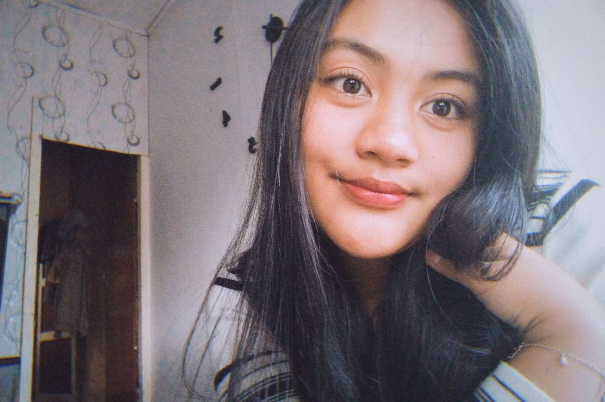

“setelah sekian lama tidak saling tahu kabar, ternyata aku masih bisa menemukan rasa nyaman dari cara kita berbicara seperti dulu. tidak banyak yang berubah, hanya waktunya saja yang sempat membuat semuanya terasa jauh.”
“aku sempat berpikir semua hal tentang kita sudah selesai sejak lama. tapi anehnya, beberapa percakapan kecil akhir-akhir ini justru membuatku sadar kalau ada perasaan yang tidak benar-benar pergi. dia hanya diam, menunggu waktu yang tepat untuk muncul lagi.”
“aku tidak sedang mencoba mengulang masa lalu. aku hanya merasa, ada bagian dari dirimu yang masih selalu berhasil membuat suasana menjadi lebih tenang, bahkan tanpa melakukan apa-apa.”
“dan setelah semua waktu yang lewat, aku mulai sadar kalau beberapa rasa ternyata tidak hilang. mereka hanya tumbuh menjadi lebih tenang.”
“kalau kali ini hidup memberi kesempatan untuk berjalan lagi ke arah yang sama, aku ingin menjalaninya dengan cara yang lebih baik.”
ujuj, mau ga jadi pacar aku lagi?